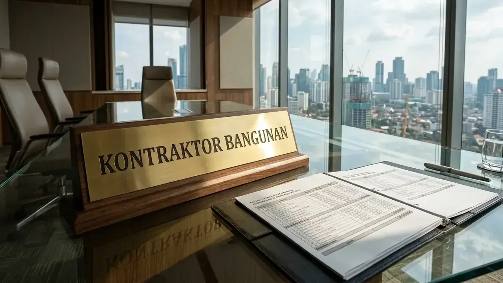

Bagaimana Hasil Review Template RAB Excel Bangunan Siap Pakai di Pasaran?
Hasil review menunjukkan template Excel sangat membantu untuk struktur hirarki pekerjaan (WBS), namun sangat rawan salah pada variabel harga satuan dan formula koefisien.
Template RAB Excel yang beredar secara umum telah memiliki bagan kerja (Work Breakdown Structure) yang teratur, mulai dari Pekerjaan Persiapan, Pondasi, Struktur Beton Bertulang, Pasangan Dinding, Kusen & Pintu, Rangka Atap, hingga Mekanikal-Elektrikal-Plumbing (MEP). Struktur ini sangat bermanfaat untuk memastikan tidak ada pos pekerjaan mayor yang terlewat.
Namun, kelemahan mendasar yang sering ditemukan meliputi:
- Formula Koefisien Mengunci (Hardcoded Values): Banyak rumus dalam sel tidak terhubung dinamis dengan lembar acuan AHSP Permen PUPR terbaru.
- Ketiadaan Pembobotan Waktu (Time Schedule Kurva S): Sebagian besar template hanya menyajikan total nominal tanpa grafik arus kas (cash flow) mingguan/bulanan.
- Asumsi Kondisi Lahan Ideal: Format standar selalu mengasumsikan tanah datar siap bangun, mengabaikan biaya pembersihan puing, pengurukan, atau dinding penahan tanah (retaining wall).
Bagaimana Cara Sesuaikan RAB dengan Lokasi dan Kondisi Riil Proyek?
Penyesuaian dilakukan dengan mengganti database harga toko material setempat, standar upah tukang kota target, dan koefisien aksesibilitas tapak.
Setiap wilayah memiliki disparitas harga komoditas konstruksi yang signifikan. Sebagai contoh, harga semen Portland dan pasir pasang di wilayah Jawa Timur dapat berbeda 15-25% dibandingkan wilayah Kalimantan atau Jabodetabek. Berikut langkah sistematis dalam cara sesuaikan RAB dengan lokasi proyek:
1. Riset Harga Material Toko Lokal Terdekat
Lakukan survei harga riil untuk 5 material dengan bobot volume terbesar (Pareto 80/20): Besi beton ulir SNI, semen kemasan 50 kg, bata ringan/merah, pasir cor/pasang, dan split batu pecah. Masukkan angka tersebut ke dalam kolom master data harga satuan material.
2. Kalibrasi Upah Tenaga Kerja Regional
Standar upah harian tukang batu, tukang kayu, tukang besi, tukang cat, dan mandor wajib disesuaikan dengan UMR dan kebiasaan upah borongan harian di lokasi tapak proyek berada.

Kustomisasi tabel Analisa Harga Satuan Pekerjaan (AHSP) disesuaikan dengan indeks harga regional terkini.
3. Masukkan Koefisien Waste Material (Faktor Susut)
Jangan hanya mengalikan volume bersih denah. Tambahkan faktor kehilangan material (waste factor) sebesar 3-5% untuk besi beton, 5-7% untuk keramik/granit lantai, dan 3% untuk adukan cor semen.
4. Tambahkan Biaya Aksesibilitas dan Langsir
Jika lokasi proyek berada di dalam gang sempit yang tidak dapat diakses truk colt diesel / molen mixer, tambahkan pos biaya langsir material manual dari titik bongkar menuju lokasi kerja.
Tabel Komparasi Pendekatan Estimasi Biaya Bangunan
Tabel komparasi menguraikan perbedaan antara Template Excel Bebas Unduh, Template Modifikasi AHSP PUPR, dan Layanan RAB Profesional Kontraktor Bangunan.
| Parameter Evaluasi | Template Excel Gratisan | Template AHSP Modifikasi Sendiri | Layanan RAB Kontraktor Bangunan |
|---|---|---|---|
| Tingkat Akurasi Biaya | Rendah (Meleset 20-35%) | Sedang (Meleset 10-15%) | Sangat Tinggi (Deviasi < 3%) |
| Kesesuaian Regulasi SNI | Tidak Terjamin | Standar SNI Manual | SNI & Permen PUPR 2025/2026 Terverifikasi |
| Dukungan Kurva S (Cash Flow) | Jarang Tersedia | Dibuat Manual | Terintegrasi Otomatis dengan Time Schedule |
| Rincian Merk & Spesifikasi | Nama Barang Generik | Perlu Input Manual Lengkap | Spesifikasi Merk Jelas Terikat SPK |
| Garansi Kepatuhan Biaya | Nol (Risiko Sendiri) | Nol | Garansi Biaya Pasti (Fixed-Price Contract) |
| Efisiensi Waktu Penyusunan | Cepat tetapi Berisiko | Butuh Waktu 3-7 Hari | Cepat & Akurat Dikerjakan Estimator Ahli |
- Gunakan Fitur Trace Dependents: Periksa seluruh sel subtotal di lembar Recap untuk memastikan semua item pekerjaan di lembar rincian (Bill of Quantity) telah terakumulasi ke dalam total anggaran.
- Hindari Pembulatan Kasar di Tingkat Satuan: Biarkan angka koefisien menggunakan 3-4 digit desimal di belakang koma untuk mencegah pembengkakan kumulatif pada pekerjaan volume besar.
- Pisahkan Komponen Contingency (Biaya Tak Terduga): Tetapkan alokasi dana darurat sebesar 5-10% pada baris terpisah di bagian akhir rekapitulasi, bukan dengan menaikkan harga satuan material secara tersembunyi.
Pertanyaan yang Sering Diajukan (FAQ)
Kesimpulan Praktis
Template RAB Excel adalah alat bantu hitung yang efektif hanya jika dioperasikan dengan data harga satuan yang akurat dan formula yang terverifikasi. Hindari risiko salah hitung anggaran dengan memanfaatkan layanan validasi profesional kami.